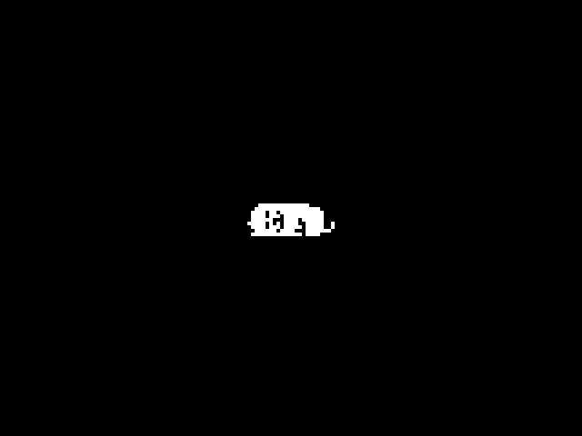

Undertale é um jogo de RPG criado por Toby Fox, onde você controla um humano que caiu no subsolo, um mundo habitado por monstros. O objetivo do jogo é encontrar uma maneira de voltar para casa, enfrentando e fazendo amizade com os monstros ao longo do caminho.


Dog Clicks:
